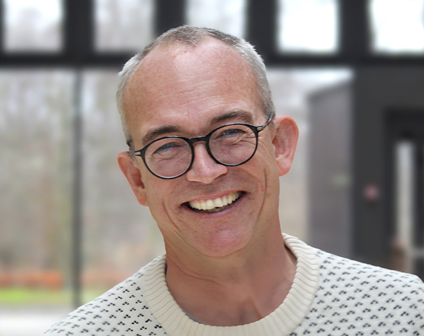

Morten Lindow

Since 2025 I am the leader of the Center for Pharmaceutical Data Science Education and professor at the Deparment for Drug Design and Pharmacology at the University of Copenhagen. Read one of my pieces on the need for data science integration in pharma here.
This website is a slight adaptation of the job application that landed me this fantastic job. It is only sporadically updated. Please follow me on LinkedIn and the CPDSE website for news and updates.
Briefly about me:
17 yrs experience and track record of turning ideas into drug candidates. Leading and supporting roles in >40 oligonucleotide drug discovery projects: 5 reached clinical stages, 2 in phase 2, 2 programs with novel conjugate targeting moeities reaching clinical development
One of the pioneers behind computational design of oligonucleotide drugs. Structure-activity-relationships, specificity, kinetic models and practical implementation in drug discovery. See Section 1 below.
Tireless and often successful proponent of integration between data science and drug discovery: From data-geeks to drivers of RNA-therapy projects in Santaris and RICC, digital strategy for Roche pRED, bioinformatics integration into Research in Lundbeck and organizational design for data and analytics in Roche pRED, RNAHub as a fully integrated cross-functional unit in Roche and now Center for Pharmaceutical Data Science Education. See Section 2 below.
Experience and passion for leading and evolving progressive and human centered ways of working and organizing together in scientific enterprises: project maturity and innovation leadership in RICC, ReimagineOurContribution in Roche, RNAHub in Roche and CPDSE’s way of working. See Section 3 below.
Entrepreneurial ecosystem and community creator: Nordic Nucleic Acid Based Medicine Network (founder and driver), Danish RNA Society (co-founder and former board member), Beers Data and Drugs, Biogeeks, various industry-academia advisory boards, leading roles in 4 public-private founded partnerships, various non-professional NGOs. See Section 4 below.
1 Research: Oligonucleotide design and discovery
- Led and built the discipline of oligonucleotide drug design in Santaris Pharma and Roche Innovation Center Copenhagen (2008-2016, group leader).
- Essential scientific software tool for oligo discovery:
- Architect and code-base for TargetSurveyor (internal to Santaris and Roche), a software suite that systematically enumerates and computationally assess all possible target sites and viable chemical modifications for a possible drug target.
- Architect for miRMaid, a repository for miRNA information (paper), Pythia, a system to register, manage and support all information pertaining to physical Oligonucleotides (internal to Santaris and Roche)
- Oversight and advise on global Roche systems supporting RNA Therapeutics.
- Thought-leader on principles and practices of managing the sequence specificity of oligonucleotides. Numerous talks and publications: Nat.Biotech, NAR, NAR, NAR, NAR
- Led first (and most cited) application of machine learning to predict in vivo safety of oligonucleotides (hepatotox-predictor, NAR). Coached and catalysed internal Roche teams building and deploying proprietary oligo models.
- Led development of kinetic model that explains relationships between affinity, potency, turn-over and efficacy of oligos. Insights and model key to understand and optimise oligonucleotides drug candidates. Mol.Ther.Nuc.Acids
View full publication list on Google Scholar.
2 Data science, bioinformatics and their integration into biology and chemistry
Promoted and coached OligoLoop (2022-2024, sponsor, RNAHub) - a setup and team aiming for 2-week cycles from design of oligos, synthesis in small scale, screening in cells with RNASeq and learning from the data. Then iterate.
Embedding of 3 data engineers, 3 data scientists and 3 bioinformaticians full-time into the cross-functional RNAHub with biologists and chemists (2022-2024, RNAHub lead). Spreading and providing data literacy and higher quality experiments and analysis. ASFAIK, this is so far the highest level of overall data literacy in any Roche end-to-end discovery team.
Roche Pharma Research and Early Development (pRED) Digital Strategy (2017, member). Strategy team member for global Roche Strategy, spanning from ML for qSAR, FAIR-data, omics, stratification, companion-diagnostics and more. Spawning numerous very costly workstreams. Far too big and too siloed in their own digital world, so my impact was unfortunately minimal.
Design team for Data and Analytics organization in pRED (2021, member). Org-design led to a ‘hub and spoke’ org-model, where ‘spokes’ should be embedded with the chemists and biologists. Good direction, but not yet fully implemented.
Expanded and shifted bioinformatics and data science, from a heavy clinical development anchoring into early research at Lundbeck (2018-2020, director). Formed and led target decision support teamand new modalities assessment team.
Bioinformatics group in Santaris (2008-2014, director): shift bioinformaticians from tool-builders and service providers to (co-) leaders of discovery projects.
3 Leadership: Design and co-leading progressive scientific organizations
Project Excellence and Innovation Office at Roche Innovation Center Copenhagen (2014-2018, director). Raising organizational project and innovation maturity (training, discipline, rhythms and rituals)
ReimagineOurContribution (2020-21, lead): a progressive project that changed performance management practices for a Roche business unit of 750 people: From extrinsic motivation and judgments (bonus, ratings) to intrinsic motivation (autonomy, purpose, mastery and belonging). Motto: from me to we.
Corporate strategy and reorganizations:
RNA Therapeutics Research Strategy in Roche (2016, supportive lead).
RNA Molecule Strategy and Reorg in Roche (2018, supportive lead). Focus on core competences in Denmark
RNA Consolidation Strategy and Reorg (2022, supportive lead). Led to the closure of the Danish Roche site and consolidation of all activities in Basel. I led the transfer and rebuilding from Copenhagen to Basel in the RNAHub.
RNAHub (2022-2024, lead), pioneering way of working across specialities never tried in Roche before. Promo site of our RNAHub approach
4 Ecosystem and community
Nordic Nucleic Acid Based Medicine Industry Network (2020-, founder and main driver). Unites the growing Danish Industry ecosystem on RNA and Gene therapy. Just had our 6th and largest meeting at BII.
Beers data and drugs. Informal after work gatherings of pharma and tech professionals (2020-2023, co-founder). One event at Roche Innovation Center Copenhagen, 3 events at Abzu.ai.
Leading roles in 4 industry-academia grants from Højteknologifonden and Innovationsfonden.
Advisory board roles at NextProd and RNALeaders-conference
Employer and industry board for at Uni Copenhagen: Humanbiology education, Biomedical Institute (BMI) (2016-2022)
Oligonucleotide Safety Working Group (DIA), 2012-2014
Pro-bono advisor for several start ups at BII (2023-).
Lindow Bioconsult (founder and consultant, 2012-2015)
Biogeeks bioinformatics consultancy collective (2008-2011)